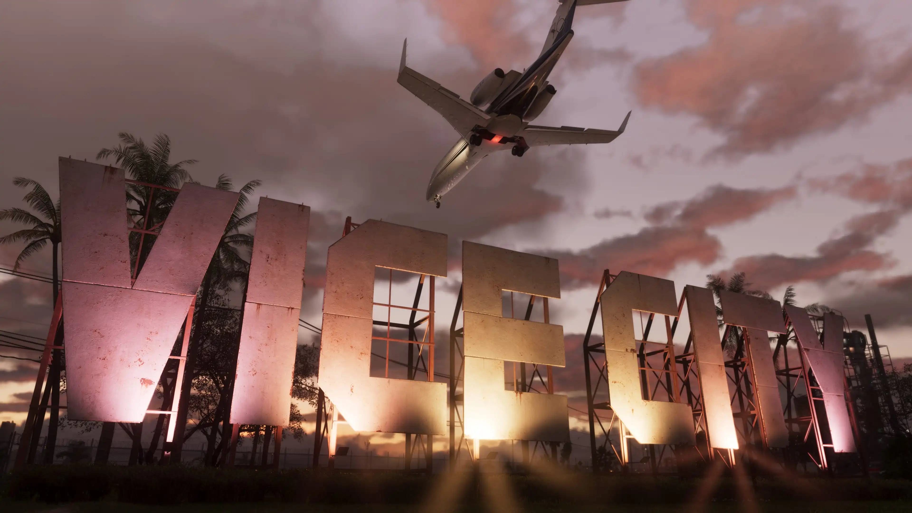
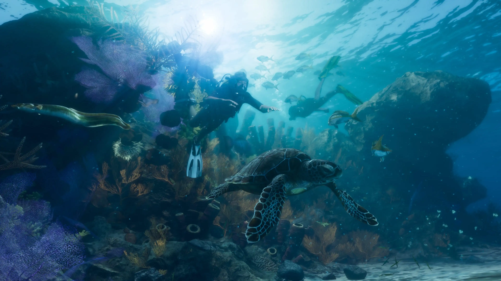
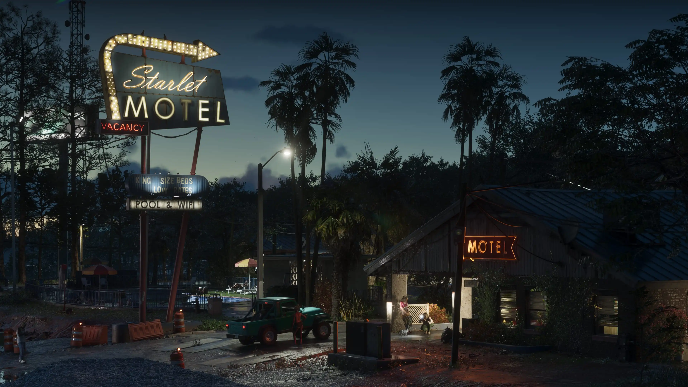
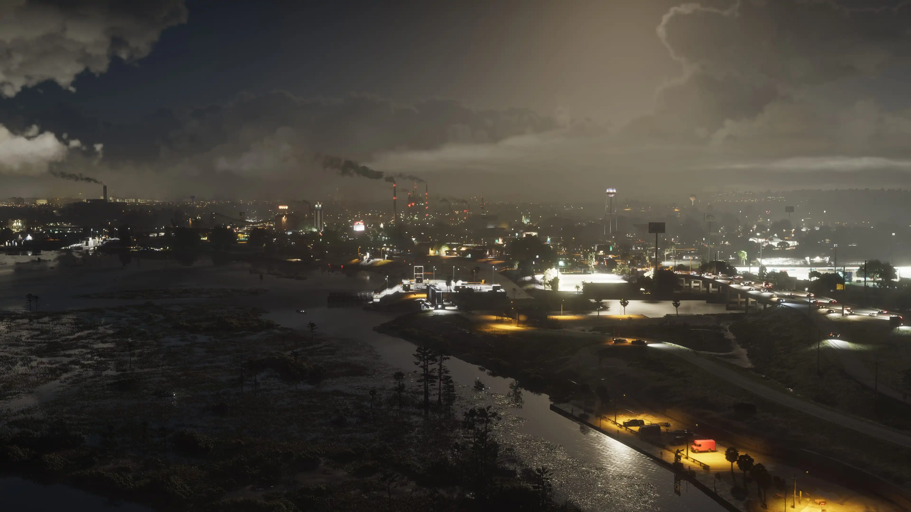
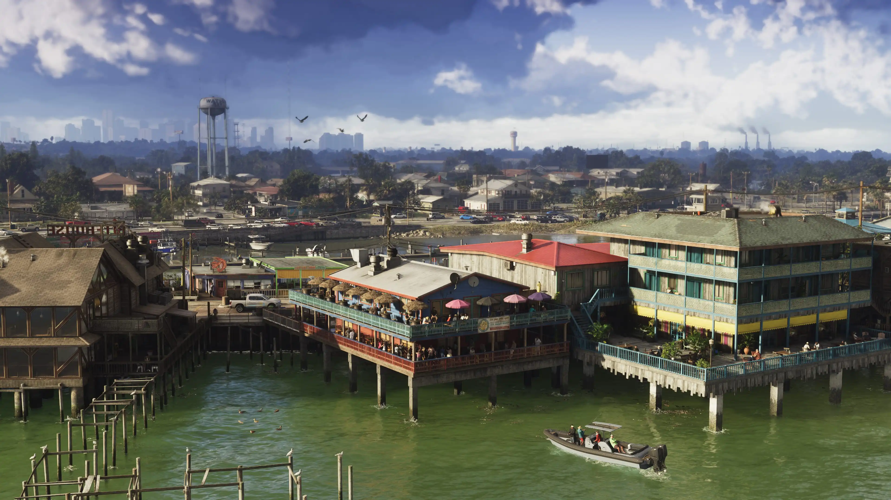
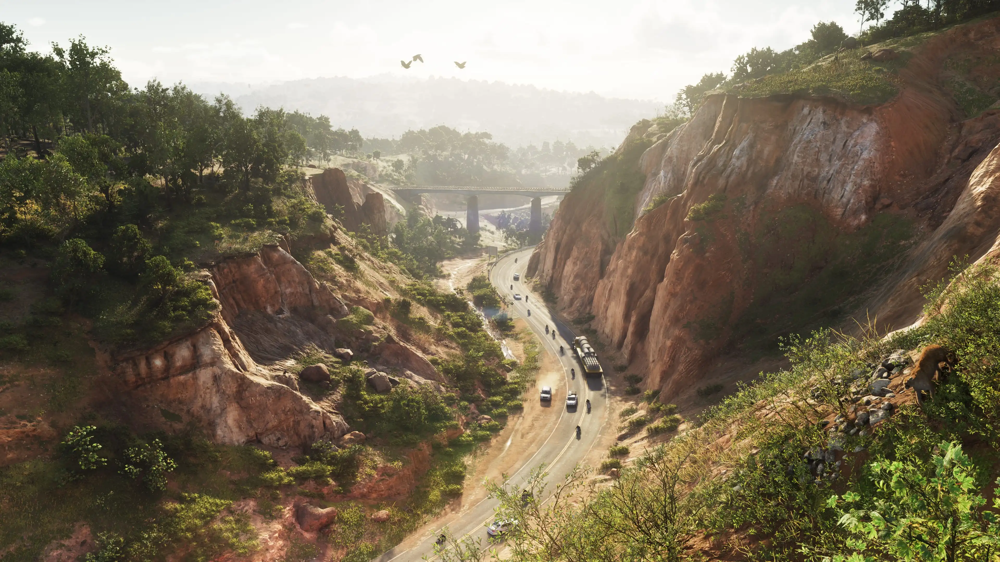
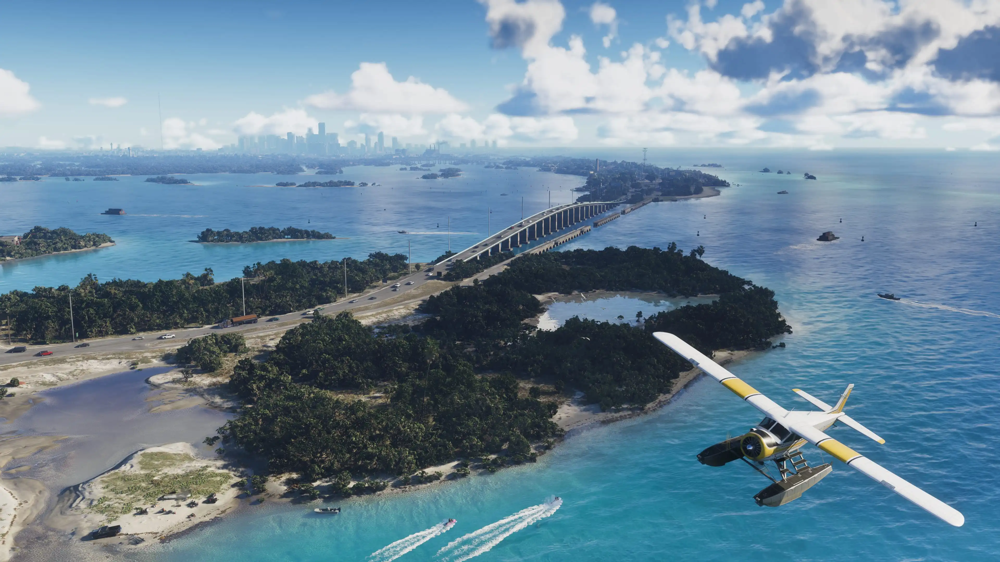

Rockstar Games recently released a fresh batch of Grand Theft Auto VI screenshots, giving fans another look at Leonida ahead of the game's November 19, 2026 launch. As expected, much of the conversation immediately focused on Vice City's stunning visuals, realistic lighting, and incredible level of detail.
But after looking through the full collection of screenshots, one thing stands out more than anything else.
Rockstar seems determined to show players that GTA 6 is about far more than Vice City.
The latest gallery is not simply a collection of random images. Instead, Rockstar has organized the screenshots across several distinct regions of Leonida, including Vice City, the Leonida Keys, Port Gellhorn, Ambrosia, Grassrivers, and Mount Kalaga National Park.
Taken together, these locations paint a picture of a world that appears significantly more varied than many fans may have expected.
Vice City Is Still the Star

There is no question that Vice City remains the centerpiece of GTA 6. Rockstar's own description leans into that directly, calling it the sun and fun capital of America, the glamour, hustle, and greed of the country captured in a single city. Every neighborhood is built to feel distinct, from the pastel art deco hotels and white sand of Ocean Beach to the bustling panaderías of Little Cuba, the bootleg stalls of the Tisha-Wocka flea market, and the cruise ship traffic running through VC Port.
The city dominates many of the new screenshots, showcasing crowded streets, waterfront districts, high-rise buildings, nightlife, and a level of density that immediately caught the attention of fans across social media. Some screenshots are packed with vehicles, pedestrians, businesses, and environmental detail that continue Rockstar's reputation for building believable open worlds. If these images are any indication, Vice City could become one of the most detailed urban environments ever seen in a Rockstar game.
But Rockstar Keeps Showing Everything Around It
What makes the screenshot drop interesting is that Rockstar did not stop at Vice City. The studio dedicated significant attention to several regions outside the city, each with a completely different identity, climate, and economy.
Leonida Keys

The Leonida Keys are Rockstar's take on the real Florida Keys, and the official framing makes the tone clear: the dress code is casual, the bars are loaded, and life in this tropical archipelago is not flashy but it is easy. Screenshots show crystal clear water, marinas, and small island communities, the kind of postcard scenery that sits right on the doorstep of some of the most beautiful and dangerous waters in the state. It is also worth noting that the starting apartment for Jason and Lucia, shown in Trailer 2, is located here.
Port Gellhorn

Port Gellhorn leans hard into industrial decline. Once a working vacation town, it is now defined by shuttered attractions, cheap motels, and an economy that has shifted toward something rougher. Rockstar's own copy does not soften it much, describing a place fueled by malt liquor, painkillers, and truck stop energy drinks, the kind of area where you hold onto your wallet and keep moving. For a series built on contrast, Port Gellhorn is the clearest opposite number to Vice City's glamour.
Ambrosia

Ambrosia presents a very different atmosphere altogether. Rather than skyscrapers and beaches, the area reads closer to a small industrial county, built around the Allied Crystal sugar refinery that keeps the local economy running, alongside a local biker gang that fills in everything the factory does not provide. It suggests GTA 6's world will include communities with their own culture and internal politics, not just scenery to drive past.
Grassrivers

Grassrivers continues the Florida inspiration with sprawling wetlands modeled directly on the Everglades. Expect swamps, marshland, cypress forests, and slow-moving rivers, along with alligators, boar hunting, and the kind of isolated rural communities that feel worlds apart from the bright lights of Vice City. Wildlife is confirmed to play a real role here, adding a different kind of danger than anything players will run into downtown.
Mount Kalaga National Park

Perhaps the most surprising part of the entire screenshot collection is Mount Kalaga National Park. While many fans expected GTA 6 to feature beaches, cities, and swamps, a large national park was not necessarily at the top of anyone's prediction list. Rockstar describes it as room to breathe on the state's northern fringes, a national landmark offering prime hunting, fishing, and off-road trails, with hillbilly mystics and paranoid radicals living far from the prying eyes of the government in the surrounding backwoods.
The screenshots show dense forests, rugged terrain, hiking areas, and expansive natural landscapes. More importantly, Rockstar dedicated multiple screenshots to the region, suggesting it could play a much larger role in the overall experience than some players might initially assume. Whether the area serves as a destination for exploration, outdoor activities, story missions, or simply a dramatic contrast to urban life remains to be seen. What is clear is that Rockstar wants players to notice it.
Leonida Feels Like a State, Not Just a Map

The biggest message hidden within Rockstar's latest screenshots may be the diversity of Leonida itself. Rather than presenting a single massive city surrounded by empty countryside, Rockstar appears to be building a world made up of distinct regions, each with its own atmosphere and identity.
Vice City represents the urban heart of the state.
The Leonida Keys provide tropical escapes.
Port Gellhorn offers industrial grit.
Ambrosia introduces small-town life.
Grassrivers delivers untamed wetlands.
Mount Kalaga National Park expands the world into rugged wilderness.
Individually, these screenshots are impressive showcases of GTA 6's visual fidelity. Collectively, they suggest something even more exciting. Rockstar is not just building a bigger Vice City. It is building an entire state that feels alive, with community estimates and Rockstar's own framing both pointing toward a map considerably larger and denser than San Andreas in GTA V.
What This Means Heading Toward November
With November 19, 2026 now the confirmed release date, the new screenshots may not reveal major story details or gameplay mechanics. They do, however, offer perhaps the clearest look yet at Rockstar's vision for Leonida, and that vision appears to be much larger and more diverse than a single city could ever be.